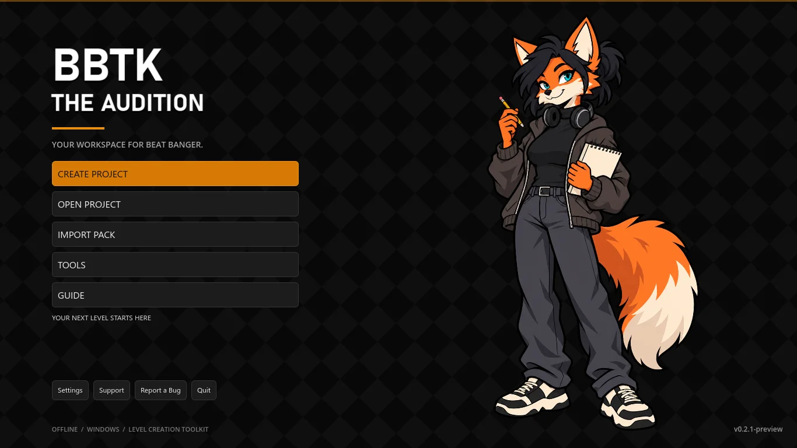
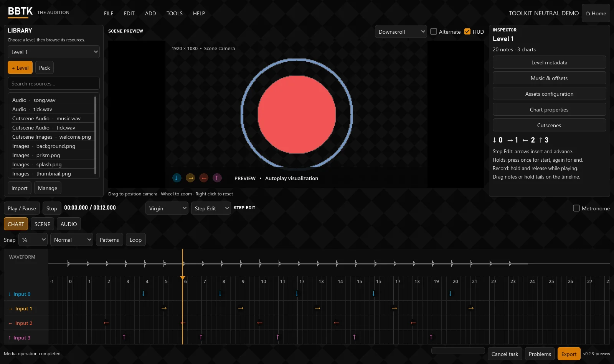

Give every beat a place.
Four input lanes, holds, recording, snap divisions and reusable patterns. Edit with the keyboard or directly on the timeline.
OFFLINE TOOLS FOR BEAT BANGER CREATORS
Chart the rhythm. Set the scene.
Keep every part of your level in one workspace.
Windows x64 · Preview build · Local projects

MADE FOR THE WHOLE LEVEL
Four input lanes, holds, recording, snap divisions and reusable patterns. Edit with the keyboard or directly on the timeline.
Animation loops, camera changes, backgrounds and video alongside your chart. Seek through a scene without losing your place.
Build spritesheets, convert media, find a tempo and write cutscenes. Resource tools also work without opening a project.
THE WORKSPACE
Resources on the left, a scene in the center,
properties on the right, rhythm below.

Imports preserve the original pack. Unknown fields and native Godot values stay intact.
Undo, recovery snapshots and separate project copies let you revise your work.
Problems helps locate missing files and invalid data. Export a folder or ZIP for testing in the game.
GET THE TOOLKIT
The Windows portable build is being checked before public release.
The guide and issue tracker are available now.
BEFORE YOU START
Editing, resource tools and local exports work offline. The website, support and issue tracker need a connection. A local guide accompanies the portable build.
It is experimental. The initial compatibility profile targets Steam build 25730471; use the actual game for final acceptance.
No. Game packs, their artwork and audio are local test references and are not distributed with the toolkit.
Open an issue with your version, reproduction steps and expected result. Avoid uploading private or copyrighted media.